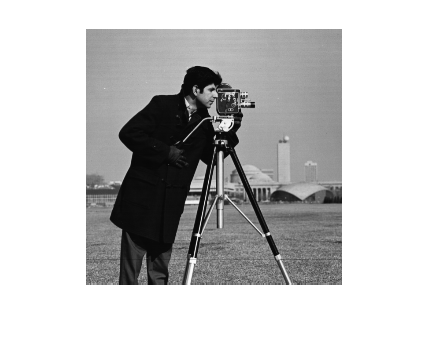
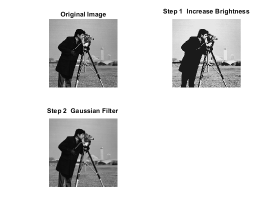
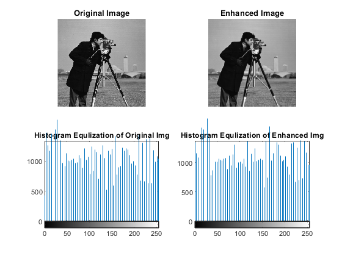
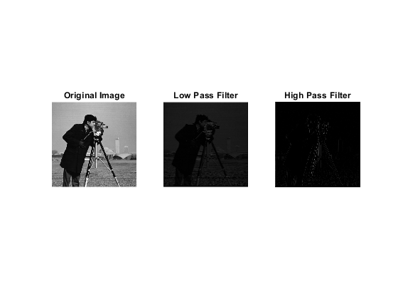
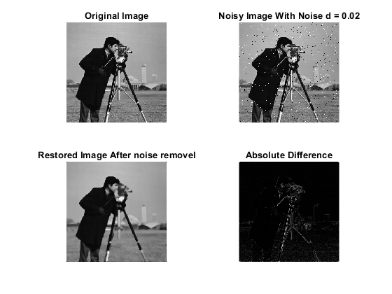
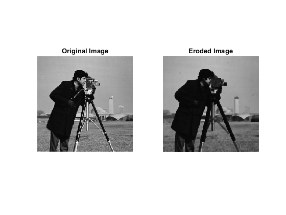

Contents
CPE415 Digital Image Processing
Author: Fazeel Abbas Registration Number : CIIT/FA20-BCE-041/LHR Lab Terminal
clc; clear all; close all;
Question # 1
Part A
clc; clear all; close all; % fprintf('Enter your three digit registration number: \n'); % digit1 = input('Enter First digit: '); % digit2 = input('Enter Second digit: '); % digit3 = input('Enter Last digit: '); Img = imread ('cameraman.tif'); if size(Img,3)== 3 % checking the number of layers, If layers = 3 means Img = rgb2gray(Img); % Image is RGB else Gray Scale else fprintf('Image is Already gray scaled'); end figure; imshow(Img)
Image is Already gray scaled
Part 2
For Image Enhancement In Step 1 the Image Brighness is Increased by lower the gamma value In Step 2 Gaussian Filter is used to blurr the Image to Smooth Edges
clc; S1 = imadjust(Img,[0.3 0.7],[0.1 0.9],0.5);%lower gamma increase brightness H1 = fspecial('gaussian',[4 4]); S2 = imfilter(Img, H1, 'corr', 'symmetric', 'full'); figure; subplot(221), imshow(Img), title('Original Image'); subplot(222), imshow(S1), title('Step 1 _ Increase Brightness'); subplot(223), imshow(S2), title('Step 2 _ Gaussian Filter ');
Part 3
The histogram Equalization of Original Image and Enhanced Image Is almost Similar
clc; HistE_Ori_Img = histeq(Img); HistE_Enhanced_Img = histeq(S2); figure; subplot(221), imshow(Img), title('Original Image'); subplot(222), imshow(S2), title('Enhanced Image'); subplot(223), imhist(HistE_Ori_Img), title('Histogram Equlization of Original Img'); subplot(224), imhist(HistE_Enhanced_Img), title('Histogram Equlization of Enhanced Img');
Question # 2
Part A
Low pass filter will smooth the Image High pass filter will sharpen the Image
clc; clear all; Img = imread('cameraman.tif'); Img_gray = im2double( Img ); % Gray Image %Low pass butterworth filter [a,b] = butter(3, 0.3, 'low'); % 3th Order butterworth filter BLP = filter2(a, b, Img_gray); % Here Threshold is 0.2 %High pass butterworth filter [c,d] = butter(3, 0.6, 'high'); % 3th Order butterworth filter BHP = filter2(c, d, Img_gray); % Here Threshold is 0.6 figure; subplot(131), imshow(Img_gray), title('Original Image'); subplot(132), imshow(BLP), title('Low Pass Filter'); subplot(133), imshow(BHP), title('High Pass Filter');
Part B
white and black dots where d defines it's density. It effects the image pixel wise. Imnoise assign random prob to each pixel and on the prob the black and whites dots are added
% Using Median filter becasue it does not get effected by the extreme values and it % smoothes the image and preserve edges clc; clear all; Img = imread('cameraman.tif'); Img_gray = im2double( Img ); % Gray Image Noisy_Img = imnoise(Img_gray,'salt & pepper',0.02); % 0.02 is the noise density Restored_Img = medfilt2(Noisy_Img,[5 5]); % [5 5] is the size of the filter % Increasing filter size from a specific size can also make image noisy % act pixel wise and replace it's median value based % Absolute Difference Diff_Img = abs(Img_gray - Restored_Img); figure; subplot(221), imshow(Img_gray), title('Original Image'); subplot(222), imshow(Noisy_Img), title('Noisy Image With Noise d = 0.02'); subplot(223), imshow(Restored_Img), title('Restored Image After noise removel'); subplot(224), imshow(Diff_Img), title('Absolute Difference');
Part C
% in erosion is doesn't reduce the number of pixels it select [4 4] square % and apply it on the image that's why there is a blocky effect in the % image clc; clear all; Img = imread('cameraman.tif'); Img_gray = im2double( Img ); % Gray Image se = strel('square',4); %structuring element Eroded_Img = imerode(Img_gray,se); figure; subplot(121), imshow(Img_gray), title('Original Image'); subplot(122), imshow(Eroded_Img), title('Eroded Image');